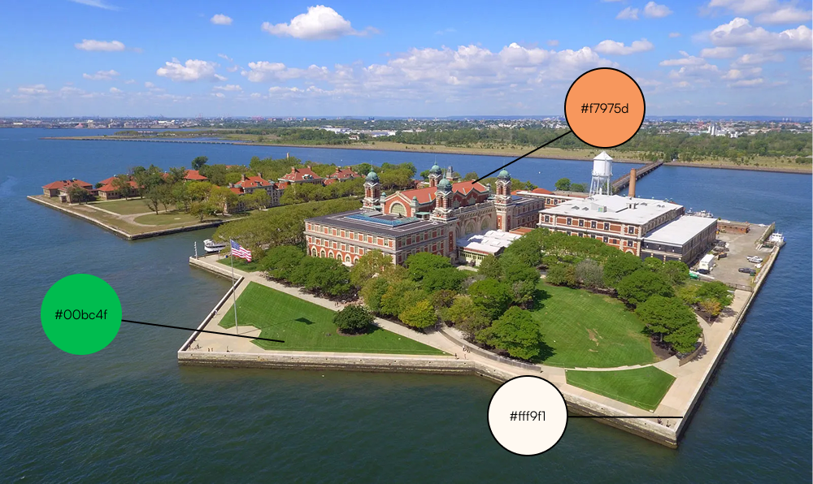
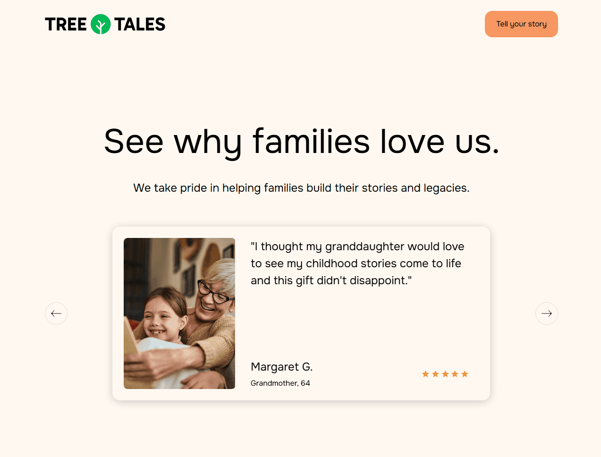

Background
TreeTales had grown conceptually over 2 years from timeline-based storybook to a customizable storybook
paired with generative AI features.
However, TreeTales was stuck—it had a clear vision, but that vision wasn’t clear to potential customers.
The company needed a push to uplevel its design and customer-facing presentation while dealing with the
challenges of being a startup.
My Role
I led the design of the website between September 2024 to December 2024. I originally acted as a design
consultant for TreeTales in August 2024 before joining as their design lead. I collaborated primarily
with the founder and worked alongside two engineers. I designed the concept via Figma and built the
website via Webflow.
The version being showcased in this case study launched on December 21, 2024.
A welcoming and warm design
When designing the website, I chose to take a warm and comforting approach that emphasized familial
bonds to connect the emotional impact of the product with the website.

A story inspired by many others before us
When deciding on a color scheme for the website launch, we decided on basing the colors off of Ellis
Island. TreeTales seeks to empower individuals who want a written, recorded history for their family,
some of whom may be descendants of immigrants who passed through Ellis Island themselves.
Sleek and honest designs
Great designs are easy to understand, yet enjoyable to view. Among many other features, I designed the
testimonial section to look sleek and easy to understand.
